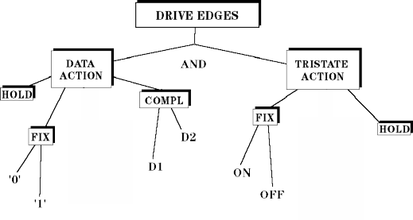

Drive Edges and Actions
For every drive edge, you have to define a data action and a tri-state action. A data action causes the test system to output some type of signal, the tri-state action sets the channel to high impedance. The figure below shows the actions that can be associated with drive edges.

You can assign the following data actions to a drive edge:
hold |
holds the previous state |
fixed |
drives to a fixed state (high or low) |
You can assign the following tri-state actions to a drive edge:
hold |
holds the previous state |
fixed |
drives to a fixed state (tri-state enabled or disabled) |
If you only need a data action you can select "hold" as tri-state action. It is possible to have a drive and a tri-state action on the same edge.
Waveforms are discussed in Waveforms.
Combinations of Drive and Tri-state Actions
The combination of drive and tri-state actions can be assigned to all edges.
You can generate all the combinations if you program the test system at firmware level. For detailed information, see WFDF, WFDF? - (WaveForm DeFinition) or WFDS, WFDS? - (WaveForm Definition String).
Functional changes
- Introduced before SmarTest 6.3.2
- SmarTest 7.2.0: Removed the Shapes window